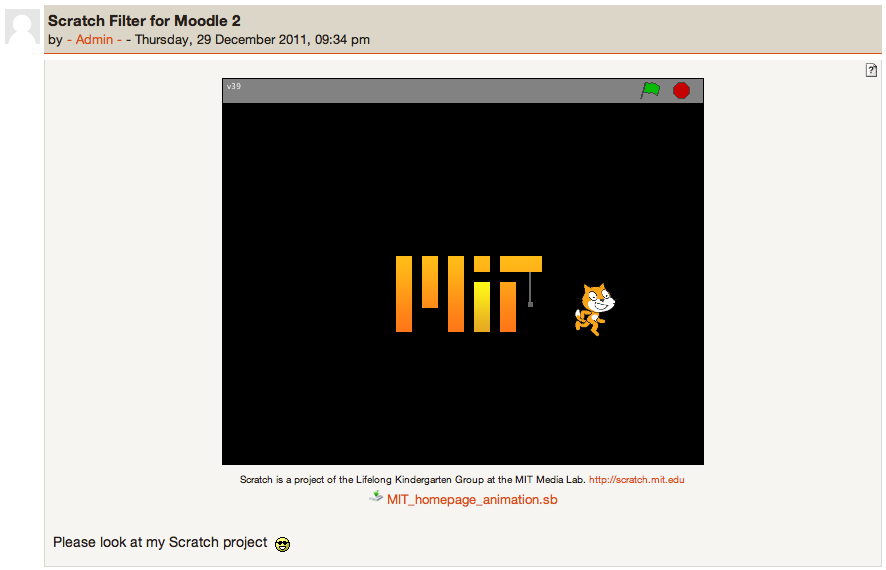

This filter allows to embed Scratch games easily into a Moodle based virtual learning environment:

This filter allows you to embed Scratch games into labels, forums, or web pages automatically - wherever you create a link to a .sb Scratch file that has been uploaded onto the Moodle server (either as an attachment to a forum post, or as a course file).
This not only allows you to use Scratch files as teaching aids, examples, or games but also allows students to share their own Scratch games with other students via a forum, giving and receiving feedback and learning from each other's scripts.
ScratchApplet.jar and soundbank.gm are included with permission from the Scratch team. These files may need updating from time to time as new versions of Scratch are released. They are generally available from:
http://scratch.mit.edu/static/misc/ScratchApplet.jar and http://scratch.mit.edu/static/misc/soundbank.gm
Scratch is developed by the Lifelong Kindergarten Group at the MIT Media Lab. See http://scratch.mit.edu
This plugin is released for free but without any warrantee under the GNU General Public License v3: http://www.gnu.org/copyleft/gpl.html